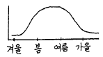
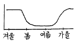
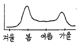
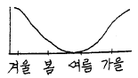

수산양식기사 (2004-03-07 기출문제)
1과목: 어류양식학
1. 넙치자어 사육시 일반적으로 최초의 먹이생물로 이용되는 것은?
- 코페포다
- 로티퍼
- 알테미아
- 섬모충
(정답률: 95%)

2. 10kg의 사료를 주었더니 100g짜리 잉어 100마리가 모두 150g으로 자랐다. 이 때의 사료계수는?
- 0.5
- 1
- 1.5
- 2
(정답률: 75%)
3. 뱀장어 양식장에 물벼룩이 많이 발생하면 해로운 이유는?
- 산소 부족이 일어난다.
- 물이 맑아진다.
- 영양분을 많이 흡수한다.
- 수질이 빨리 오염된다.
(정답률: 90%)
4. 조피볼락의 자어 사육시설 관리에 있어 자어의 안정을 유도하기 위하여 수조의 표층 조도로 가장 알맞은 것은?
- 50~100 룩스
- 150~200룩스
- 250~300 룩스
- 300~350룩스
(정답률: 86%)
5. 다음 중 틸라피아 생태에 관한 사항으로 틀린 것은?
- 우리나라의 경우 야외 못에서는 여름철의 3∼4개월 정도 밖에 사육할 수 없다.
- 체색은 환경에 따라 변화가 심하다.
- 산란은 23-28℃에서 이루어진다.
- 사육밀도가 낮으면 성장은 빠르나 번식은 억제된다.
(정답률: 81%)
6. 자주복의 수정난에 대한 설명 중 틀린 것은?
- 채란 후 수시간 동안은 수정확인이 어렵다.
- 수정 후 발생기간의 전반은 투명하다
- 수정되지 않은 난은 자색 또는 황색으로 변색한다.
- 수정난은 진주처럼 광택을 갖는 유백색이다.
(정답률: 50%)
7. 참돔의 양식에 있어서 먹이를 주는 방법으로서 가장 좋은 요령은?
- 조금씩 장시간 동안 수차에 걸쳐 자주 준다.
- 하루 중 아침과 저녁 무렵 2회에 걸쳐 준다.
- 매일 오전 10시 기준으로 그날 투이량을 한꺼번에 준다.
- 2~3일 만에 한번씩 대량으로 준다.
(정답률: 78%)
8. 다음 중 방어의 성장 최적 수온은?(오류 신고가 접수된 문제입니다. 반드시 정답과 해설을 확인하시기 바랍니다.)
- 10° ~ 15℃
- 15° ~ 18℃
- 18° ~ 23℃
- 23° ~ 26℃
(정답률: 9%)
9. 다음 중 넙치의 육상양식시 순간성장율을 최대로 할 수 있는 적정 사육밀도는?
- 체표면적비 2배
- 체표면적비 3배
- 체표면적비 4배
- 체표면적비 6배
(정답률: 61%)
10. 가와찌 붕어의 특징이 아닌 것은?
- 산란의 예상이 힘든다.
- 월동중의 체중감소가 작다.
- 질병은 체표의 손상에 기인되는 경우가 많다.
- 사람과 잘 익숙해진다.
(정답률: 95%)
11. 송어알을 부화시킬 때에 수생균의 소독에 가장 좋은 약품은?(관련 규정 개정전 문제로 여기서는 기존 정답인 3번을 누르면 정답 처리됩니다. 자세한 내용은 해설을 참고하세요.)
- 메치렌블우
- 푸라네스
- 말라카이트그린
- 딥테렉스
(정답률: 68%)
12. 해산어의 장기수송(長期輸送)의 경우 필요한 용존산소의 최소 한계량에 해당되는 것은?
- 1㎖/ℓ
- 2㎖/ℓ
- 4㎖/ℓ
- 8㎖/ℓ
(정답률: 74%)
13. 치어기(雉魚期)에 있어서 유조(流藻)와 관계가 없는 어종은?
- 방어, 잿방어
- 볼락, 돌돔
- 쥐치, 말쥐치
- 참돔, 감성돔
(정답률: 42%)
14. 은어 양식에서 생식소 억제 방법으로 가장 좋은 방법은?
- 염분 처리
- 온도 처리
- 광주기 처리
- 먹이 조절
(정답률: 79%)
15. 원형지를 이용한 유수식 양식에서 고형오물의 빠른 배출을 위하여 바닥의 경사도는 일반적으로 얼마나 주고 있는가?
- 3%
- 6%
- 10%
- 15%
(정답률: 69%)
16. 어류의 고밀도 양식시 환경오염을 가장 최소화 할 수 있는 양식방법은?
- 가두리 양식
- 유수식 양식
- 정수식 지중 양식
- 순환여과식 양식
(정답률: 89%)
17. 무지개 송어의 친어사료에 단백질 권장량(%)은?
- 45∼50
- 35∼40
- 40∼45
- 30∼35
(정답률: 77%)
18. 잉어의 경우 산란이 가장 많이 이루어지는 수온 범위는?
- 16∼28℃
- 19∼23℃
- 15∼18℃
- 28℃ 이상
(정답률: 70%)
19. 먹이생물이 갖추어야 할 조건이 아닌 것은?
- 적정 크기 및 모양
- 영양 성분 확보성
- 대량 배양성
- 약한 운동성
(정답률: 87%)
20. 선발육종(Selective breeding)에서 가장 많이, 쉽게 취급하는 형질은?
- 관상성
- 내병성
- 성장력
- 산란력
(정답률: 84%)
2과목: 무척추동물양식학
21. 양성장을 선정할 때 저질을 가장 깊이 조사해야 하는 종류는?
- 우럭
- 대합
- 바지락
- 피조개
(정답률: 47%)
22. 가리비 치패의 중간육성관리 내용 중 부적당한 것은?
- 조용한 내만에서 육성 관리한다.
- 수용밀도를 알맞게 조절한다.
- 채롱이 동요되지 않도록 시설한다.
- 성장을 위해 표층 가까이에 수하한다.
(정답률: 80%)
23. 대하의 가장 알맞는 종묘생산용 어미 확보시기는?
- 5월 중순
- 6월 중순
- 7월 중순
- 8월 중순
(정답률: 50%)
24. 개량조개에 대한 설명 중 옳지 않은 것은?
- 양성시 해수비중이 1.023 ∼ 1.024 정도가 좋다.
- 치패의 이식장소는 간출시간이 긴 만조선 부근이 좋다
- 치패의 이식시기는 3 ∼ 4 월경이 좋다.
- 채취시기는 12월에서 익년 4월경이 좋다.
(정답률: 64%)
25. 패류에게 독을 주어(具毒化現象)나중에 사람에게 해를 주는 플랑크톤은?
- 고니아우랙스 카태넬라(Gonyaulax catenella)
- 김노디늄 브리-브(Gymnodinium breve)
- 스케레토네마 코스타툼(Skeletoema costatum)
- 키토세로스 아피니스(Chaetoceros affinis)
(정답률: 50%)
26. 대합양식을 위해 알아둘 사항이다. 잘못된 것은?
- 18∼20℃인 때에 방란, 방정을 많이한다.
- 성숙한 어미라도 육안으로 암수를 구별하기는 어렵다.
- 수정한 후 저서생활에 이르는 기간은 약 3주간 이다.
- 유생은 부유생활을 마치면 저질중에 잠입한다.
(정답률: 40%)
27. 보리새우 암컷의 교미 후 형태 변화는?
- 정충만 체내에 담는다.
- 날개 모양의 교미전이 붙게 된다.
- 교미전의 형태를 볼 수 없다.
- 암컷 수컷이 동시에 산란 방정한다.
(정답률: 55%)
28. 진주담치의 서식지역이 우리나라 전 연안으로 확장될 수있었던 이유가 아닌 것은?
- 번식력이 강해서
- 경제적 가치가 높아서
- 해상 수송 수단의 발달로
- 양식이 쉬워서
(정답률: 58%)
29. 전복을 이식해서 양성하고자 한다.다음의 설명 중 틀린 것은?
- 저위도 지방으로 이식한다.
- 큰 것 일수록 생존율이 높다.
- 작은 것 일수록 이식 효과가 크다.
- 해조가 풍부한 외양성 암초 지대로 이식한다.
(정답률: 66%)
30. 우리나라 서해안에 있어서 바지락의 산란성기에 해당하는 것은?
- 3∼4월
- 5∼6월
- 7∼8월
- 9∼10월
(정답률: 65%)
31. 비단가리비에 관한 것이다. 맞는 것은?
- 우리나라 전 연안에 분포하며, 조간대 밑에서부터 수심이 20∼30m 되는 곳에 주로 서식한다.
- 소형으로 각장 75mm 내외이고 각정의 앞뒤에 6각형의 큰 귀와 같이 생긴 돌기가 있다.
- 보통, 갈색 또는 분홍색 반점이 있으나 적색, 자색 및 백색 등의 개체 변이가 있으며 색깔이 아름답다.
- 방사능은 크고 작은 것이 많고 개체 간의 차이도 심하나, 5조는 뚜렸하고 거의 같은 간격으로 방사하고 있다.
(정답률: 50%)
32. 고막의 바닥양성에 관한 것이다. 맞는 것은?
- 조간대에서 조하대 사이에서 양성한다.
- 저질은 개흙질로, 다소 붉은 색을 띤 회백색이 좋다.
- 해조류가 많은 곳은 좋지 않다.
- 해수의 흐름이 거의 없는 내만에 양성한다.
(정답률: 25%)
33. 우리나라 남해안에서 문어를 양성할 때 반드시 피해야 할 시기는?
- 4월
- 6월
- 8월
- 10월
(정답률: 77%)
34. 피조개 인공종묘 생산에서 유생사육 과정이다 틀린 것은?
- 부화 직후 담륜자는 수면으로 부상해서 움직이는데, D상이 되면 옮긴다.
- 패각이 몸을 완전히 쌀 때까지 물리적인 충격을 주면 안된다.
- 사육탱크로 옮긴 후는 환수를 해야한다.
- 먹이는 채란 후 2일째 부터 주면된다.
(정답률: 40%)
35. 우리나라 산 비단련 종굴은 채묘한 다음 몇 개월 후에 본수하시켜야 하는가?
- 1 개월 후
- 3 개월 후
- 6 개월 후
- 9 개월 후
(정답률: 70%)
36. 참굴 천연종묘생산에서 부착치패와 채묘에 관한 것이다. 맞는 것은?
- 부유 유생을 관찰해서 부착시기가 가까워지면 시험용 채묘연을 채묘 예정 장소에 수하하고 다음 날 수심별 부착 치패 수를 계수한다.
- 부착 치패 계수에는 100배 정도 되는 배율의 현미경을 사용한다. 아울러, 참굴의 부착 치패와 다른 부착 생물을 구별해야 한다
- 참굴의 부착 치패는 대합의 소형에 닮은 조개 비슷한 꼴로서 황색인 것이 많다.
- 참굴 채묘일은 따개비의 부착이 없고 참굴 부착치패만 있을 때가 적기이다
(정답률: 45%)
37. 우렁쉥이 인공종묘생산에 관한 것이다. 맞는 것은?
- 어미는 성숙 시기에 각고 10cm 이상 되는 것으로 한다.
- 1∼2톤 탱크일 경우 10∼20ℓ 의 해수를 주입하고 통기는 탱크의 표면에서 한다.
- 배수구 망목의 크기는 150∼200㎛ 되는 뮬러 가아제로 막는다.
- 유생의 꼬리가 보이기 시작하면 부착기를 넣는다.
(정답률: 40%)
38. 부착동물이나 비부착성 저서 조개류의 종묘 방양량과 직접 관계가 있는 것은?
- 먹이 발생량
- 수온
- 산소
- 해수의 유통
(정답률: 67%)
39. 서해안의 어청도나 동해안의 울릉도 연안에서 양식하는데 가장 알맞는 전복의 종류는?
- 시볼트 전복
- 까막 전복
- 말전복
- 참전복
(정답률: 75%)
40. 해삼의 재생력에 관한 설명으로 틀린 것은?
- 재생력은 12월 이후 수온이 가장 낮을 때 빠르다.
- 소화관이나 호흡수는 특히 재생력이 강하다.
- 재생력은 계절에 따른 수온 변동과 깊은 관계가 있다.
- 재생력을 이용한 양성의 목적은 소금에 절인 Konowata의 생산에 있다.
(정답률: 62%)
3과목: 해조류양식학
41. 김의 자연채묘(건홍)의 적기는?
- 수온 12∼15℃가 되는 대조시
- 수온 22℃전후에서 15℃로 하강하는 대조시
- 수온 15℃이하에서 5∼8℃까지의 기간
- 수온 10℃전후의 겨울철
(정답률: 69%)
42. 김사상체에 병해 징조가 나타났을 때 먼저 영양제 첨가로서 치유되는 병은?
- 적변병
- 닭살
- 녹변병
- 황반병
(정답률: 60%)
43. 미역양식시설 중 조립연승식의 특징을 가장 잘 나타낸 것은?
- 뗏목식과 연승식을 개량한 것
- 뗏목식을 개량한 것
- 연승식을 개량한 것
- 김 그물발(망홍)을 개량한 것
(정답률: 69%)
44. 다시마의 맛을 내는 정미 성분은?
- 글루탐산
- 아스파르트산
- 알긴산
- 메치오닌
(정답률: 71%)
45. 다음 중 김 부류식(뜸흘림발) 시설이 아닌 것은?
- 뒤집기식
- 사다리식
- 연승식
- 연구조식
(정답률: 40%)
46. 근래 들어 우리 나라에서 양식 김의 주 대상이 되는 것은?
- 참김
- 방사무늬김
- 긴잎돌김
- 둥근김
(정답률: 48%)
47. 지충이와 톳의 군락이 경합을 하게 되는 가장 주된 원인은?
- 다년생 해조이다.
- 유성생식만 한다.
- 부착층(생육대의 폭)이 같다.
- 건조, 파랑에 대한 적응력이 같다.
(정답률: 43%)
48. 큰 참김의 양식성으로서의 단점은?
- 파도에 약하다.
- 병해에 약하다.
- 색택이 나쁘다.
- 엽질이 거칠다.
(정답률: 38%)
49. 다음 중 북방형 미역의 특징이 아닌 것은?
- 포자엽의 주름수가 많다.
- 잎의 열각이 깊다.
- 크기가 작고 줄기가 짧다
- 엽편수가 체장에 비하여 적다.
(정답률: 79%)
50. 냉장씨발로서 만기 생산에 적합한 씨발은?
- 싹이 배고 크기가 작은 것
- 싹이 배고 큰 싹 인 것
- 싹이 성기고 중 정도 인 것
- 싹이 성기고 큰 싹 인 것
(정답률: 55%)
51. 철판 산화도법에서 감량이 많다는 것은?
- 해수중에 탄산염이 많은 것이다.
- 해수중에 투과되는 조사량이 많은 것이다.
- 해수의 온도가 올라가기 때문이다.
- 해수의 유동이 많기 때문이다.
(정답률: 50%)
52. 풀가사리의 반상체에서 새싹이 돋아 나는 시기는?
- 12 ∼ 2월
- 3 ∼ 5월
- 6 ∼ 8월
- 9 ∼ 11월
(정답률: 57%)
53. 미역바늘구멍의 원인생물은?
- 조균류
- 등각류
- 요각류
- 히드라충
(정답률: 63%)
54. 유용 해조를 위한 갯닦기에서 주 대상이 되지 않는 것은?
- 대형 다년생 해조
- 소형 다년생 해조
- 1년생 해조
- 말잘피류
(정답률: 59%)
55. 미역 종묘 배양에서 초기 관리로 잘못 된 것은?
- 수온은 23℃를 초과하지 않도록 한다.
- 수온상승과 더불어 조도를 차차 높힌다.
- 조도는 처음은 5000∼6000Lux로 한다.
- 1개월에 1,2회 채묘틀의 상하를 바꾼다.
(정답률: 67%)
56. 조가비 사상체의 채묘시 과포자의 적정 투입량은?
- 1 개/cm2
- 10 개/cm2
- 1 개/mm2
- 10 개/mm2
(정답률: 42%)
57. 김양식 어장에서 뚜렷한 피해를 주지 않는 생물은?
- 매생이
- 규조류
- 단각류
- 따개비
(정답률: 17%)
58. 다시마 양식의 해적생물은?
- 히드라
- 매생이
- 규조류
- 파래
(정답률: 64%)
59. 각포자낭의 형성과 방출을 다 같이 억제하는 방법은?
- 온도처리
- 암흑처리
- 포화습도처리
- 연속명기처리
(정답률: 57%)
60. 자연산 유용 해조류의 증식방법과 거리가 먼 것은?
- 투석
- 암반폭파
- 해중림조성
- 갯닦기
(정답률: 43%)
4과목: 양식장환경
61. 다음 중에서 해류의 지표종이라고 하는 화살벌레류는 어느 동물에 해당하는가?
- 절지동물
- 연체동물
- 모악동물
- 극피동물
(정답률: 35%)
62. 글로키듐(glochidium)유생기를 거치는 연체동물은?
- 키조개
- 진주담치
- 벗굴
- 대칭이
(정답률: 40%)
63. 이매패류(부족류)에 관한 설명으로 틀린 것은?
- 2개의 폐각근을 갖는다.
- 치설을 가지고 있다.
- 배설기관으로 보야누스(Bojanus)기관을 갖는다.
- 해산종의 대부분은 체외수정을 한다.
(정답률: 27%)
64. 어류에서 나타나는 이차 성징을 짝지은 것 중 틀린 것은?
- 실고기과 - 육아낭
- 잉어과 - 혼인색 혹은 추성
- 연골어류 - 교미기
- 은어 - 비늘
(정답률: 48%)
65. 다음 중 가장 한해성인 종류는?
- 참가리비
- 백합
- 동죽
- 피조개
(정답률: 27%)
66. 어류의 간은 종류에 따라 크기, 모양 및 색깔 등에 차이가 있는데, 4엽으로 되어 있는 어종은?
- 잉어
- 참다랑어
- 참돔
- 은어
(정답률: 38%)
67. 감태(Ecklonia cava)에 관한 글이다 사실과 다른 것은?
- 미역처럼 대형해조이며 1년생 해조이다.
- 전복, 소라 등의 중요한 먹이 자원이다.
- 알긴산의 원료로 매우 중요한 해조자원이다.
- 다시마과에 속하며 점심대의 해중림을 형성한다.
(정답률: 42%)
68. 낙지는 분류학상 다음 중 어디에 속하는가?
- 십완류
- 팔완류
- 이완류
- 꼴뚜기류
(정답률: 39%)
69. 다음의 해조류에서 한천의 원료가 되는 것은?
- 파래· 청각
- 미역· 다시마
- 톳· 모자반
- 우뭇가사리· 풀가사리
(정답률: 60%)
70. 절지동물의 특징으로 맞지 않는 것은?
- 몸은 좌우대칭이다.
- 체절적 구조를 가진다.
- 혈관계는 폐쇄혈관계이다
- 자웅이체이다.
(정답률: 39%)
71. 고래에 대한 설명이다. 바르게 된 것은?
- 대왕고래는 가장 큰 고래이며, 현재 남태평양에서만 포경이 가능하다.
- 돌고래는 열대성으로 저위도 지방에서만 분포하고 있다.
- 향유고래는 이빨고래중 가장 작은 크기를 하고있는 무리다.
- 참고래는 현재 급격한 자원 감소로 인해 보호종으로 지정되어 있다.
(정답률: 57%)
72. 다음 동물들 중 생활사 중 척색을 가지는 것은?
- 성게
- 닭새우
- 진주담치
- 우렁쉥이
(정답률: 36%)
73. 다음 어류 중 청어류에 속하지 않는 물고기는?
- 은어
- 정어리
- 멸치
- 전어
(정답률: 33%)
74. 어류의 꼬리지느러미는 척추의 뒤끝 부분에 의해 지지되어있으나, 그 부분의 형태에 의해서 여러 가지로 나누는데, 동형미(isocercal tail)로 되어있는 어종은?
- 상어
- 잉어
- 붕장어
- 환도상어
(정답률: 45%)
75. 다음 중 생활사에서 변태과정을 거치지 않는 어류는?
- 넙치
- 잉어
- 뱀장어
- 가자미
(정답률: 53%)
76. 어류의 인공채란시 어류의 뇌에서 적출하여 인공배란 조절에 사용하는 부분은?
- 뇌하수체 전엽
- 뇌하수체 중엽
- 뇌하수체 후엽
- 시상하부
(정답률: 38%)
77. 다음 중 옆줄이 완전히 없는 종류는?
- 농어
- 정어리
- 쥐노래미
- 잉어
(정답률: 28%)
78. 해조비료(海藻肥料)가 비료성분으로서 가장 많이 가지는 것은?
- 질소
- 인산
- 칼륨
- 미량원소
(정답률: 27%)
79. 아리스토텔레스 등(Aristotles lantern)이라고 부르는 저작기는 어느 동물에만 갖고 있는가?
- 해파리류
- 불가사리류
- 해삼류
- 성게류
(정답률: 27%)
80. 해산 경골어류에서 삼투조절을 위하여 해수로부터 흡수된 과잉의 Na, K, Cl 등의 성분을 배출하는 기관은?
- 피부
- 창자
- 콩팥
- 아가미
(정답률: 31%)
5과목: 수산질병학
81. 다음 중 양어지에 산소를 공급하는 방법으로 좁은 수로에 시설하여 그 효과를 배가시킬 수 있는 것은?
- 수차
- 제트펌프
- U자관 이용
- 에어스톤 이용
(정답률: 50%)
82. 물 속에 녹아있는 산소의 양은 공기중 산소의 어느 정도인가?
- 약 1/60
- 약 1/40
- 약 1/30
- 약 1/20
(정답률: 52%)
83. 정수식 못양식에서 어류의 수용밀도를 정하는 주 기준은?
- 물의 교환율
- 수심
- 면적
- 주수구의 크기
(정답률: 69%)
84. 해수어의 육상수조식 양식장에서 사육수를 살균하는데 사용하는 오존이 해수 중의 어떤 용존 물질과 결합하면 독성을 나타낸다고 한다. 어떤 물질과 관련이 있는가?
- 요오드
- 질소
- 탄소
- 카드뮴
(정답률: 73%)
85. 다음 중 양식장에서 발생하는 암모니아의 작용에 대하여 바르게 설명한 것은?
- 암모니아는 담수에서 그 독성이 더 강해진다.
- 동물에 해로운 것은 이온화 안된 암모니아이다.
- 동물에서 배설될 때에는 대부분 NH4+의 형태이다.
- pH가 높아질수록 이온화된 암모니아의 비율이 높아진다.
(정답률: 37%)
86. 양식장의 용존물질을 제거하는데 가장 효율적인 방법은?
- 드럼필터
- 모래,자갈
- 스크린망
- 포말분리
(정답률: 50%)
87. 사육 수조에서 고형 오물을 제거하는 데 영향을 주는 주요 요인은?
- 수용된 물고기의 종류
- 수용된 물고기의 성별
- 사육 수조의 크기
- 사육수의 수온
(정답률: 58%)
88. 담수 양어장에서의 pH 에 대하여 나타낸 것이다. 가장 바람직한 pH 범위는?
- 10.0 - 12.0
- 9.0 - 10.0
- 5.5 - 6.5
- 6.5 - 9.0
(정답률: 65%)
89. 일반적으로 온대지방의 해양에서 영양염류의 계절적 분포 양상을 가장 잘 나타내고 있는 그림은?




(정답률: 45%)
90. 지수 양어지에서 용존산소의 저하와 더불어 발생하는 가장 유독한 가스는?
- 탄산가스
- 이산화탄소
- 황화수소
- 일산화탄소
(정답률: 87%)
91. 양어지의 석회를 살포하면 어떤 효과가 나타나는가?
- CaCO3 생성에 의한 CO2의 고정화
- 중금속 이온의 용해도 증가
- 유기물 입자의 분해성 증가
- 고분자 유기화합물의 고분자화
(정답률: 61%)
92. 천해의 패류양식장에서 어장의 노화현상을 방지할 수 있는 방법 중 현실적인 것이 아닌 것은?
- 조류소통 개선
- 밀식 방지
- 먹이공급 중단
- 바닥 경운
(정답률: 46%)
93. 봉상온도계로 수온을 측정할 때의 설명으로 틀린 것은?
- 온도계마다 기차가 있으므로 표준온도계와 비교, 검정하여 사용한다.
- 물속에 온도계를 구부는 물론 관부까지 잠기도록하여 1분정도 기다린다.
- 햇볕이 잘드는 밝은 곳에서 측정한다.
- 눈금을 읽을 때에는 수은주의 끝이 보이는 곳까지 수면으로 올려 읽는다.
(정답률: 44%)
94. 해수에서 기름오염에 대한 설명으로 틀린 것은?
- 해수에 유출된 기름은 해면에 기름막을 만들어 대기중의 산소 유입을 막는다.
- 기름은 물에 혼합되지 않기 때문에 부유성 생물에만 영향을 미친다.
- 해수중에 유입된 기름은 박테리아에 의하여 서서히 분해된다.
- 기름을 제거하기 위한 유화제가 오히려 생물에 해를 줄 수도 있다.
(정답률: 74%)
95. 다음중 종밋의 대량발생에 의한 피해에 해당되는 것은?
- 굴수하식 양식장에서의 산소 부족
- 전복 양식장의 점유
- 어류의 가두리 양식장의 조류 차단
- 피조개 양식장의 황폐화
(정답률: 43%)
96. 생물학적 여과중 질산화 과정에 참여하는 세균은?
- 슈도모나스(Pseudomonas)
- 에어로모나스(Aeromonas)
- 니트로소모나스(Nitrosomonas)
- 스트렙토코쿠스(Streptococcus)
(정답률: 78%)
97. 정수식 못 양식에서 일반적인 물의 보충기준량은?
- 매일 총 수면적의 5%
- 증발과 누수에 의한 물의 감소량만큼
- 매주 어류방양량의 2%
- 자연적으로 해결되므로 신경쓰지 않는다
(정답률: 69%)
98. 이산화탄소가 수중에 다량 축적되면 물의 pH는 어떻게 되는가?
- 산성화된다
- 알카리화된다
- 중성이 된다
- pH와 무관하다
(정답률: 57%)
99. 순환여과식으로 틸라피아를 양성할 때 수용밀도가 높아지면 서로의 접촉에 의하여 몸 표면에 손상을 받기 쉽고 특히 지느러미의 끝이 상하기 쉽다. 이때 상처가 악화되지 않도록 하기 위하여 어떤 조치를 취하는가?
- 용존 산소량을 5mg/L 이상으로 올려준다.
- 용존 산소량을 3mg/L 이하로 낮추어 준다.
- 용존 산소량을 포화도에 가깝게 올려준다.
- 태양광선을 완전히 차단하여 조류번식을 억제시킨다.
(정답률: 40%)
100. 용존산소 용해도에 관한 설명 중 맞는 것은?
- 산소의 용해도는 기포의 크기가 클수록 작아진다.
- 산소의 용해도는 수온이 높을수록 커진다.
- 산소의 용해도는 염분의 농도가 높을수록 크다.
- 해수는 담수보다 산소용해도가 크다.
(정답률: 50%)